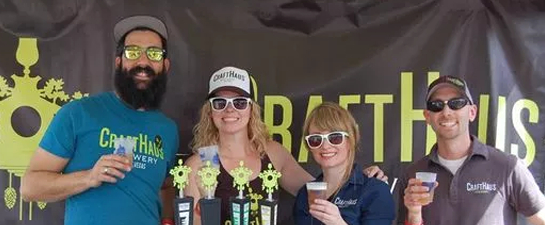
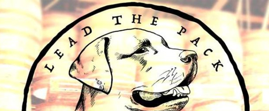

MAY 12, 2017 ~ NEWS
Planned Reno Winery in Legal Limbo; Change in Nevada Law
Needed
Business appears to be brisk at the Lead Dog
Brewing Company, which since January has
operated a pub in half of a low-slung stucco building
on Reno’s revitalized 4th Street corridor.
read more
MAY 12, 2017 ~ NEWS
How major Nevada liquor law changes could mean more local
beer and wine, explained

Nevada's craft brewpubs will be able to make more than twice as much
beer starting in July if Gov. Brian Sandoval signs an omnibus liquor bill.
Nevada is one of the top beer consuming states but one of the most
restrictive on production
read more
MAY 12, 2017 ~ NEWS
More Breweries/Wineries coming to East 4th Street

The 4th Street “Brewery District” is set to add some more players in the next
several months. The latest entries are going into 415 East 4th
(the space that Lake Tahoe Brewing was trying to open).
read more
MAY 12, 2017 ~ NEWS
New food and drink spots planned for Reno
Business appears to be brisk at the Lead Dog Brewing Company,
which since January has operated a pub in half of a low-slung stucco
building on Reno’s revitalized 4th Street corridor.
read more